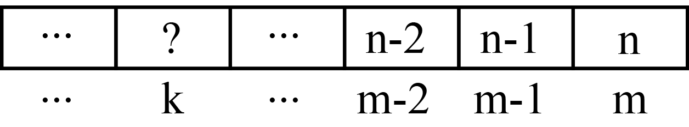

Determinarea candidaţilor posibili (condiţii interne)-II 3. Va trebui să ne asigurăm că, dacă am completat poziţia k cu un număr, să avem cel puţin alte m-k numere mai mari decât sol[i] şi mai mici ca n pentru a completa următoarele poziţii din soluţie. Asta înseamnă că pe orice poziţie nu vom putea avea un număr mai mare decât n-m+k. 